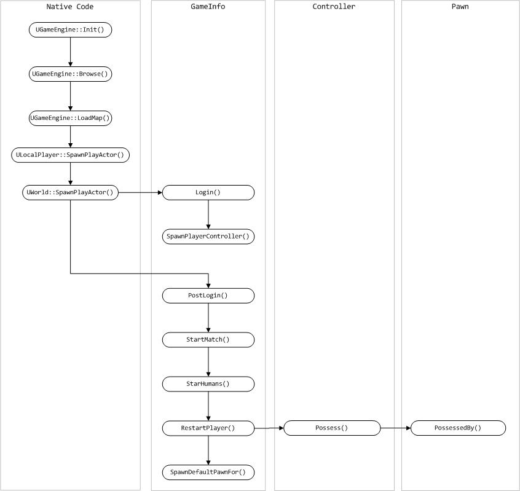
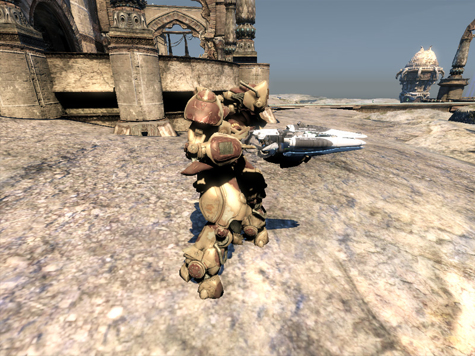

UDN
Search public documentation:
CharactersTechnicalGuideCH
English Translation
日本語訳
한국어
Interested in the Unreal Engine?
Visit the Unreal Technology site.
Looking for jobs and company info?
Check out the Epic games site.
Questions about support via UDN?
Contact the UDN Staff
日本語訳
한국어
Interested in the Unreal Engine?
Visit the Unreal Technology site.
Looking for jobs and company info?
Check out the Epic games site.
Questions about support via UDN?
Contact the UDN Staff
角色技术指南
使用2011 年 6 月的UDK版本进行了最后测试
概述

当然，不一定全是这样的情况。您的游戏或许由在世界中手动地到处放置的NPC组成，而不是动态地创建NPC。这些NPC大多数是基类Pawn的子类，Pawn类将处理它们的Controller的创建，并把那些NPC分配给那个Controller。Controllers(控制器)
PlayerController 和 AIController 。当创建您的新角色时，您将需要根据您要创建的角色类型来继承这些类其中的一个，或者它们的其中一个子类。
Controller,特别是AIControllers，大量地使用了States(状态)，它允许控制器重载同一个类中函数，并让它们根据Controller的当前状态执行不同的动作。States(状态)也提供了使用latent代码和latent函数的功能，比如AI角色使用其导航世界的运动函数。
Controllers(控制器)
Controller 基类包含了关于Pawn控制的一般性的函数和事件，它没有必要特定地针对Pawn是玩家控制的Pawn 还是AI控制的Pawn。Pawns和Possession(占有)
这些函数涉及到了占有及不占有Pawns。- Possess [inPawn] [bVehicleTransition] - 这把指定的 Pawn分配作为Controller的Pawn,并且通过调用它的PossessedBy()函数来通知Pawn。
- UnPossess - 这个函数清除了这个Controller的Pawn引用，并通过调用UnPossessedBy()函数通知Pawn它将不再被这个Controller所控制。
Inventory(武器库)
这些函数是和拾取物、武器及其它和武器相关的功能有关。- RatePickup [PickupHolder] [PickupClass] - 这是个从PickupFactory中调用的函数，它计算了拾取物的吸引力。
- HandlePickup [InvetoryItem] - 这个函数是一个空的占位符，重载这个函数可以允许您实现一些处理您已经拾取到的武器项的附加功能。
- FireWeaponAt [inActor] - 这个函数导致Controller的Pawn 向指定actor开火当前活动的武器。
- StopFiring - 这强制使得Controller的Pawn 停止开火当前活动的武器。
- SwitchToBestWeapon [bForceNewWeapon] - 这用于计算这个Controller的Pawn的武器库中哪个武器是最好的，并且使它成为活动武器。无论活动的武器是否是最好的武器，这个布尔参数选项可以强制选择一个不同的武器而不是当前活动的武器。
- ClientSetWeapon [WeaponClass] - 这个函数强制Controller的Pawn 切换到指定武器，假设Pawn的武器库中存在哪种类型的武器。
运动和导航
这些函数和使得被占用的Pawn在世界上到处移动有关；这意味着将给Pawn一个命令让它到达特定的目标，并且运动是动态的不需要每次tick都进行更新。- MoveTo [NewDestination] [ViewFocus] [DestinationOffset] [bShouldWalk] - 这导致Pawn运动到指定的位置，或可选的指定偏移量中的某个位置，同时会保持它的聚焦在给定的可选actor上。这个函数将会使用路径网络来帮助Pawn导航到目的地。
- MoveToDirectNonPathPos [NewDestination] [ViewFocus] [DestinationOffset] [bShouldWalk] - 除了它仅用于当直接运动到最终目标而不是遵循路径运动的情况外，这个函数和MoveTo()的功能一样。
- MoveToward [NewTarget] [ViewFocus] [DestinationOffset] [bUseStrafing] [bShouldWalk] - 这会导致Pawn运动到给定的actor处，该actor由NewTarget指出。当移动到另一个Pawn或一个武器actor时，这个函数将利用导航网络。
- FindPathTo [aPoint] [MaxPathLength] [bReturnPartial] - 这个函数计算出到距离给定目的地最近的导航节点的路径并返回沿着那条路径的下一个节点。
- FindPathToward [anActor] [bWeightDetours] [MaxPathLength] [bReturnPartial] - 这个函数计算出到距离给定actor 最近的导航节点的路径并返回沿着那条路径的下一个节点。
- FindPathTowardNearest [GoalClass] [bWeightDetours] [MaxPathLength] [bReturnpartial] - 这个函数计算出到距离给定类别最近的导航节点的路径并返回沿着那条路径的下一个节点。
- FindPathToIntercept [Pawn] [InRouteGoal] [bWeightDetours] [MaxPathLength] [bReturnpartial] - 这个函数计算拦截给定pawn的路径，并且随着他在世界中运动，返回沿着那条路径的下一个节点。
- PointReachable [aPoint] - 根据当前Pawn的运动能力，这个函数返回了它是否可以直接地到达给定位置。这个函数的性能消耗是非常大的，所如果可能请避免使用它，可以使用ActorReachable()作为替换。
- ActorReachable [anActor] - 这个函数根据给定Pawn的运动能力返回了它是否可以直接到达指定的actor。尽管它比PointReachable()做了更多的优化，但是这个函数的性能消耗仍然是很大的，应该谨慎地使用。
- FindRandomDest - 这个函数返回导航网络中的一个随机节点。这对于创建一个中Pawn在世界中到处闲逛的状态是有用的。
相机/ 瞄准
这个部分的函数是于视口和Controller及它的Pawn瞄准有关的函数。- GetPlayerViewPoint [out_Location] [out_Rotation] - 这个函数返回了Controller的Pawn的视角。对于人类玩家来说，这是指相机的视角。对于AI-控制的玩家来说，这个函数是Pawn眼中的视角。在这个基本的实现过程中，它只是 Controller 自己的位置和旋转量。
- GetActorEyesViewPoint [out_Location] [out_Rotation] - 如果存在Controller或它的Pawn，这个函数则返回Controller或他的Pawn的视角。基本上，它会返回玩家从哪个位置和方向观看。
- IsAimingAt [Target] [Epsilon] - 这个函数返回在给定的变动幅度内，这个Controller当前是否正在朝着指定的目标瞄准。Epsilon为1.0意味着直接朝目标瞄准，但是较低的值允许一些误差。
Player Controllers(玩家控制器)
PlayerController及它的子类实现了从人类玩家接受输入并把那个输入处理成为您在游戏中可以看到的动作的功能。在很大程度上，这意味着PlayerController 处理这样的动作，比如移动Pawn、控制相机(通过Pawn的方式)、及根据玩家已经按下的按钮或按键切换武器或是武器开火。以下是PlayerController 类的一些主要函数，并逐个对它们进行了解释。综述
这些函数从本质上是具有通用性的，它们不属于特定的类别。- Playertick [DeltaTime] - 这是玩家的主要更新函数。每次循环都会执行这个函数。
- ConsoleCommand [Command] - 这执行给定的命令，就像玩家输入的控制台命令那样。
玩家 输入/运动
这些函数是关于玩家的输入和运动的。- InitInputSystem - 这个函数通过创建PlayerController的PlayerInput类的新的实例初始化输入系统。
- PlayerMove [DeltaTime] - 这个函数计算当前运动的新的加速度和旋转值,然后调用ProcessMove()函数(对于单玩家或监听服务器)或ReplicateMove()函数(对于网络客户端)。这只是基本 PlayerController 类中的一个存根，但是它在与运动有关的特定状态中被覆盖，例如 PlayerWalking 状态。每个循环都会从 PlayerTick() 函数中调用这个函数。
- ProcessMove [DeltaTime] [newAccel] [DoubleClickMove] [DeltaRot] - 这处理客户端的当前运动。该函数被覆盖在运动需要特殊功能才能运动的特定状态内部。
- ReplicateMove [DeltaTime] [newAccel] [DoubleClickMove] [DeltaRot] - 这个函数启动了运动过程。它在PendingMove 列表中保存了当前运动，然后调用ProcessMove()和ServerMove() (在服务器上执行)。
- ServerMove [TimeStamp] [inAccel] [ClientLoc] [MoveFlags] [ClientRoll] [View] - 这个函数仅在服务器端执行，通过调用MoveAutonomous()来执行当前的运动。它也根据自从上次更新是否已经过去了足够的时间或者在客户端和服务器的位置之间是否有足够的误差来决定是否需要进行更新。
- Move Autonomous [DeltaTime] [MoveFlags] [newAccel] [DeltaRot] - 这个函数调用ProcessMove()，并且会更新任何需要执行的自治物理计算。
- ClientUpdatePosition - 这个函数更新了玩家在客户端的位置以便它可以和服务器端的位置相匹配。会从 PlayerTick()函数中调用这个函数，但是仅当ServerMove()已经判定需要时才进行调用。
- UpdateRotation [DeltaTime] - 这个函数根据玩家的输入更新了Controller和Controller的Pawn的旋转值。
- ProcessViewRotation [DeltaTime] [out_ViewRotation] [DeltaRot] - 这个函数根据玩家的输入处理玩家的视角旋转，并输出最终旋转值。从 UpdateRotation() 中调用。
AI Controller(控制器)
AIController及它的子类实现了观察Pawn的周围环境，并根据那个信息做出智能决策的功能。它从本质上使用了它自己自包含的决策循环来不断地在决策过程中进行循环，并基于这些决策执行适当的动作。下面解释了AIController 类的主函数。决策
当处理 AI控制的敌人时，决策过程显然是非常重要的。如果没有东西处理信息并根据那些信息决定做什么或怎么表现行为，那么您的NPC角色只是雕像而已，没有任何用途。显然，关于如何创建好的AI的讨论已经超出了本文档的范围，但是您仍然需要知道如何及在哪里把您的AI代码添加到AIController 类结构中。以下的函数是在决策过程中的主要函数。 注意： 这些函数是在UDKBot 类中实现的，而不是在AIController 基类中。您需要扩展UDKBot或UTBot来使用这些函数。- ExecuteWhatToDoNext - 这是决策过程的主要入口点，并且它应该包含大部分的决策逻辑。这个函数在物理tick(更新)中执行，所以它不能包含任何改变物理状态的信息。
- WhatToDoNext - 这个函数会导致在下一个tick(更新)中调用ExecuteWhatToDoNext()函数，同时这个函数也可以包含在物理更新过程中不安全执行的任何代码。这个函数不能从状态代码中进行调用，请使用LatentWhatToDonext()作为替换。
- LatentWhatToDoNext - 这个函数封装了WhatToDoNext()函数调用，并且它等待更新延迟的决策过程发生。这个函数从状态代码中进行调用，以便在等待下一个决策循环的过程中暂停状态。
Pawn
Controllers(控制器)和Possession(占有)
这些函数包含了Pawn和Controller进行交互、Controller占有Pawn和不占有Pawn相关的功能。- PossessedBy [controller] [bVehicleTransition] - 这个函数设置传入的Controller 作为Pawn的新Controller，并执行任何其它必要的动作或初始化。当Controller要占有Pawn时调用这个函数。
- Unpossessed - 这个函数清除Pawn的Controller并重新设置任何相关属性。当Pawn死亡、回合结束、或者当Controller 不再像占有这个Pawn时(也就是如果Controller 想占有不同的Pawn时)，将会从Controller 中调用这个函数。
- SpawnDefaultController - 这个函数会为Pawn产生一个ControllerClass实例，如果Pawn当前没有controller，它会使得那个Controller占有那个Pawn。将会在Pawn的PostBeginPlay() 函数中调用这个函数，来确保放在关卡中的Pawn或在游戏性过程中产生的Pawn被Controller所占有。
- DetatchFromController [bDestroyController] - 这会导致Controller 不会再占有那个Pawn，当占有关系破坏后则可以任意地销毁那个Controller 。当Pawn死亡、重置、被销毁或者被分配给另一个Controller时调用这个函数。
武器库和武器
武器库的大部分功能是由PostBeginPlay()事件中产生的Pawn的InventoryManager(武器库管理器)处理的。虽然，Pawn确实处理了某些功能并且通过使用几个特定的武器库函数把命令传递给InventoryManager(武器库管理器)。但是Pawn类也包含了几个关于武器和这些武器开火相关的函数。以下列出了这些函数。- AddDefaultInventory - 这把列在默认武器库中的武器项添加到Pawn的武器库中。这个函数从GameInfo 类的AddDefaultInventory()函数中进行调用。
- CreateInventory [inventoryClass] [bDoNotActivate] - 这创建了一个特定武器库的实例，把它添加到Pawn的武器库中，并且返回新的武器项。这个函数简单地把函数调用传递到InventoryManager(武器库管理器)来处理实际工作。
- FindInventoryType [inventoryClass] [bAllowSubclass] - 这个函数搜索Pawn的武器库获得指定类的实例，如果找到则返回那个实例。
- TossInventory [invenetoryItem] [forceVelocity] - 这会导致Pawn以任意的速度扔掉指定的武器项，把它从Pawn的武器库中删除。
- ThrowActiveWeapon - 这会导致Pawn把当前活动的武器扔到地面上，把它从Pawn的武器库中删除。这会简单地把命令传递到TossInventory()来处理实际的操作。
- SetActiveWeapon [newWeapon] - 这个函数设置自定武器作为Pawn的活动武器。这会简单地把命令传递到InventoryManager 来处理实际的操作。
- PlayWeaponSwitch [oldWeapon] [newWeapon] - 这个函数会导致Pawn播放必要的动画来把武器从一个旧的武器切换为新的武器。将会从InventoryManager的ChangeWeapon()函数中调用这个函数。
- StartFire [fireModeNum] - 这个函数会导致Pawn使用指定的开火模式使得获得活动的武器开火。这会把命令传递到Inventorymanager中。
- StopFire [fireModeNum] - 这个函数会导致Pawn停止活动武器及开火模式的开火。这会把命令传递到Inventorymanager中。
- WeaponFired [weapon] [bViaReplication] [hitLocation] - 这用于delegate(代理)所有和开火活动武器相关的特效的创建。这个函数调用了活动武器的PlayFireEffects()函数。
- WeaponStoppedFiring [weapon] [bViaReplication] - 这用于delegate(代理)所有和开火活动武器相关的特效的销毁。这个函数调用活动武器的PlayFireEffects()函数。
受到伤害
Pawn类包含了治愈及从武器和其它环境受到伤害的功能。和伤害及生命值相关的函数如下所示。- TakeDamage [damage] [instigatedBy] [hitLocation] [momentum] [damageType] [hitInfo] [damageCauser] - 这个函数会把Pawn的生命值降低指定量。
- Damage - 所降低的生命值的量。
- InstigatedBy - 受到伤害的Pawn的Controller (控制器)。
- HitLocation - 应用伤害的位置。
- Momentum - 受到伤害后应用于Pawn的速度。
- DamageType -伤害类型类描述了所产生的伤害的类型。
- HitInfo - 可选的关于伤害的TraceHitInfo结构体的信息。
- DamageCauser - 负责产生伤害的任意Actor。
- HealDamage [amount] [healer] [damageType] - 这会把Pawn的生命值增加指定量，如果Pawn没有死亡或者具有全部的生命值，那么它会把最终的生命值量限定在Pawn的最大生命值内。
- TakeFallingDamage - 这会根据Pawn的下降速度来对它应用伤害。这会把适当的伤害量传递到TakeDamage() 函数中。
- CrushedBy [otherPawn] - 当另一个Pawn基于一个Pawn上时，它会导致这个Pawn受到伤害。伤害量是根据基于这个Pawn上的Pawn的速度决定的。这个函数会从Pawn的BaseChange()函数中进行调用，并且会伤害量传入到TakeDamage()函数中。
- TakeRadiusDamageOnBones [instigatedBy] [baseDamage] [damageRadius] [damageType] [momentum] [hurtOrigin] [bFullDamage] [damageCauser] [bones] - 这个函数把根据半径进行衰减的伤害应用到Pawn的骨架网格物体的一系列特定骨骼上。
- NotifyTakeHit [instigatedBy] [hitLocation] [damage] [damageType] [momentum] - 这个函数会发送通知给任何需要知道Pawn已经受到伤害的东西。这个函数调用Controller的 NotifyTakeHit()函数。
- TakeDrowningDamage - 这个函数会根据Pawn是否在水中以及它已经在水中待了多长时间来应用伤害。
动画
Pawn使用骨架网格物体作为它们的主要可视化组件。尽管动作(比如运动)的大量动画播放都是由分配给Pawn的AnimTree 进行处理的，但是它们确实有一些播放内置动画的有限功能。这样的大多数函数都是以帮助函数的形式出现的，它会把命令传递给Pawn的骨架网格物体组件。以下解释了这些函数。 注意： Mesh变量引用了Pawn的SkeletalMeshComponent，它包含了播放单独的动画序列相关的功能。请记住使用这个功能时要求在Pawn的AnimTree中的唯一的动画节点是AnimNodeSequence 节点。这意味着您将失去AnimTree 系统的许多高级功能，比如混合；但是如果需要,这个功能是存在的。- SetMorphWeight [MorphNodeName] [MorphWieght] - 设置分配给Pawn的AnimTree 中的特定顶点变形节点的权重。
- SetSkelControlScale [SkelControlName] [Scale] - 设置分配给Pawn的AnimTree 中的特定SkelControl节点的比例。
- PlayActorFaceFXAnim [AnimSet] [GroupName] [SeqName] [SoundCueToPlay] - 这会导致Pawn 播放特定的FaceFX脸部动画序列。
- StopActorFaceFXAnim - 这会停止当前播放FaceFX脸部动画序列。
- IsActorPlayingFaceFXAnim - 这会返回一个布尔值，表明Pawn当前是否正在播放FaceFX脸部动画。
相机视角 /瞄准
当Pawn是当前的视图目标以及为玩家或NPC设置当前的目标时，这些函数包含了控制玩家的相机位置及方位的功能。- CalcCamera [DeltaTime] [out_CamLoc] [out_CamRot] [out_FOV] - 当从Pawn处开始查看时这个函数计算了相机的视角。这是玩家的主要相机计算。
- GetDefaultCameraMode [controller] - 这个函数返回了这个Pawn使用的默认相机模式的名称。通常在具有 Pawn 的时候由控制器进行调用。
- ProcessViewRotation [deltaTime] [out_ViewRotation] [out_DeltaRot] - 这个函数处理玩家的视图旋转，返回最终的视图旋转值作为out_ViewRotation参数。可以从 PlayerController 的 UpdateRotation() 函数中调用它。
- SetViewRotation [NewRotation] - 如果存在一个Controller则设置该Controller的旋转值，如果不存在Controller ，则设置Pawn本身的旋转值。
- GetActorEyesViewPoint [out_Location] [out_Rotation] - 这返回了Pawn的眼睛的位置及方位或者玩家的视角。对于第一人称视角来说，这和相机的位置及朝向一样。它也是会从这里开始执行大多数跟踪的视点。
- GetBaseAimRotation - 这个函数返回了没有经过任何调整比如瞄准误差、自动锁定、附着等的Pawn的瞄准旋转值Rotator。
- GetAdjustedAimFor [Weapon] [StartFireLoc] - 这允许一个中间点来对基础的瞄准旋转值应用任何调整，比如瞄准误差、自动瞄准等。默认情况下，这会把命令传递到Controller的GetAdjustedaimFor()函数。如果Pawn没有Controller，那么它将返回基础的瞄准旋转值。
玩家示例

Player Pawn 类
在这个示例中，我们对新的Pawn类添加了一点新功能。我们决定给它设置一个内置的生命值再生功能。在Tick()函数中，有时会给Pawn的当前Health (生命值)添加指定量的生命值。为了完成这个功能，需要添加一些类变量，然后重载Tick函数，添加生命值再生功能。
class UDNPawn extends UTPawn;
var float ElapsedRegenTime;
var float RegenAmount;
var float RegenTime;
event Tick(float DeltaTime)
{
//计算已经过去的时间
ElapsedRegenTime += DeltaTime;
//已经过去了足够的时间量了吗?
if(ElapsedRegenTime >= RegenTime)
{
//治愈Pawn并充值已经过去的时间量
HealDamage(RegenAmount, Controller, class'DamageType');
ElapsedRegenTime = 0.0f;
}
}
defaultproperties
{
//为再生属性设置默认值
RegenAmount=2
RegenTime=1
}
Player Controllers(玩家控制器)类
新的PlayerController 类是UTPlayerController 类的子类。它简单地添加了新的类成员变量来存放用作为玩家的角色类，然后通过使用现有的ServerSetCharacterClass()函数把它设置为玩家角色。
class UDNPlayerController extends UTPlayerController;
var class<UTFamilyInfo> CharacterClass;
simulated event PostBeginPlay()
{
super.PostBeginPlay();
SetupPlayerCharacter();
}
/** 设置玩家的角色信息类&执行任何其它的初始化*/
function SetupPlayerCharacter()
{
//把角色设置为我们的自定义角色
ServerSetCharacterClass(CharacterClass);
}
defaultproperties
{
//把您的自定义角色指向UTFamilyInfo 类
CharacterClass=class'UTFamilyInfo_Liandri_Male'
}
GameInfo类
为了满足将要使用的新的Pawn和PlayerController 类，我们需要一种新的游戏类型。当您使用UDK创建您自己的游戏时，您大部分时候都会使用一个自定义的游戏类型，以便您仅需要想那个类中添加一些适当的默认属性即可，而不必创建一个新类。这个示例中，创建了新的游戏类型，并简单地设置DefaultPawnClass和PlayerControllerClass属性指向新的Pawn和PlayerController 类。
class UDNGame extends UTDeathMatch;
defaultproperties
{
//指向您的自定义Pawn类
DefaultPawnClass=class'UDNPawn'
//指向您自定义的PlayerController类
PlayerControllerClass=class'UDNPlayerController'
}
NPC示例

NPC Pawn类
Pawn类是非常简单的。它添加了一些属性，但是这些属性仅是现有属性的复制，这样可以使得设计人员更加容易使用。使用一个SkeletalMeshComponent(骨架网格物体组件)来设置所有的可见属性，比如网格物体、AnimTree、AnimSets、PhysicsAsset等。在默认属性块汇总设置这些属性的默认值。类用于设置控制NPC所使用的Controller 类。PostBeginPlay()函数用于设置现有的ControllerClass 变量给新的NPCController变量。最后，重载 SetCharacterClassFromInfo() 函数，它没有做任何事情，因为这个NPC实现不需要它。 类的完整代码显示在这里：
class UDNPawn_NPC extends UTPawn
placeable;
var(NPC) SkeletalMeshComponent NPCMesh;
var(NPC) class<AIController> NPCController;
simulated event PostBeginPlay()
{
if(NPCController != none)
{
//为我们新的NPCController 类设置现有的ControllerClass
ControllerClass = NPCController;
}
Super.PostBeginPlay();
}
//重载该函数并且不做任何操作
simulated function SetCharacterClassFromInfo(class<UTFamilyInfo> Info)
{
}
defaultproperties
{
//设置默认的NPC网格物体
Begin Object Class=SkeletalMeshComponent Name=NPCMesh0
SkeletalMesh=SkeletalMesh'CH_LIAM_Cathode.Mesh.SK_CH_LIAM_Cathode'
PhysicsAsset=PhysicsAsset'CH_AnimCorrupt.Mesh.SK_CH_Corrupt_Male_Physics'
AnimSets(0)=AnimSet'CH_AnimHuman.Anims.K_AnimHuman_BaseMale'
AnimtreeTemplate=AnimTree'CH_AnimHuman_Tree.AT_CH_Human'
End Object
NPCMesh=NPCMesh0
Mesh=NPCMesh0
Components.Add(NPCMesh0)
//指向您的自定义AIController类 - 作为默认值
NPCController=class'UDNBot'
}
NPC Controller 类
Controller类是关于最基本的导航实现的类。ExecuteWhatToDoNext()函数，它是主要的决策函数，我们重载了该函数使得可以持续地把Controller发送到Roaming(闲逛)状态。这个状态简单地检查目的地是否存在或者Pawn是否到达了当前的目的地，如果必要可以设置新的目的地，然后告诉Controller向那个目的地运动。最后，调用LatentWhatToDoNext()函数来时的在下一个tick(更新)时再次调用ExecuteWhatToDoNext()函数，从而可以再次重新启动所有的决策循环。 controller类的完整代码显示在这里：
class UDNBot extends UTBot;
var Actor Destination;
protected event ExecuteWhatToDoNext()
{
//跳转到roaming(闲逛)状态
GotoState('Roaming');
}
state Roaming
{
Begin:
//如果我们刚刚开始或者我们已经到达了特定目的地
//随机地获取一个新的目的地
if(Destination == none || Pawn.ReachedDestination(Destination))
{
Destination = FindRandomDest();
}
//找到一条到达目的地的路径，并移动到这个路径的下一个节点。
MoveToward(FindPathToward(Destination), FindPathToward(Destination));
//启动下一个决策循环
LatentWhatToDoNext();
}
defaultproperties
{
}
测试新的自定义NPC
 一旦在内容浏览器的Actor列表标签中选中了该actor，那么您现在就可以在游戏视口中右击来弹出关联菜单。在关联菜单中，选择菜单项 Add UDN_PawnNPC Here(在这里添加UDN_PawnNPC) 。
一旦在内容浏览器的Actor列表标签中选中了该actor，那么您现在就可以在游戏视口中右击来弹出关联菜单。在关联菜单中，选择菜单项 Add UDN_PawnNPC Here(在这里添加UDN_PawnNPC) 。
 现在，该NPC就在世界中了。您可以使用PIE(在编辑器中播放)功能来测试游戏。
现在，该NPC就在世界中了。您可以使用PIE(在编辑器中播放)功能来测试游戏。